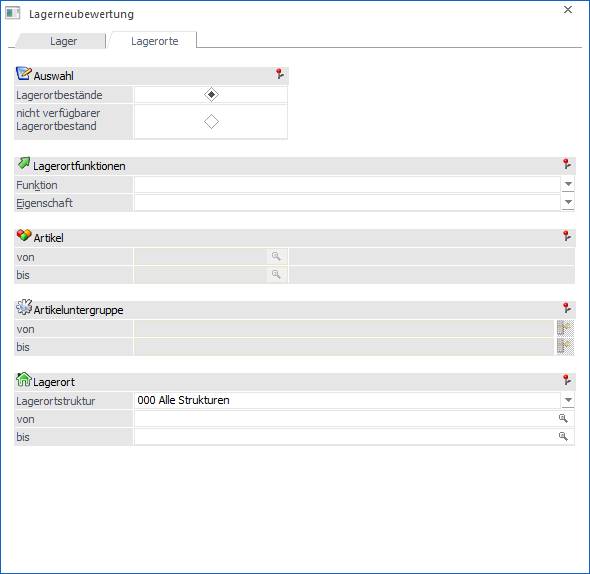
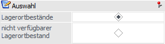
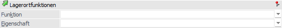
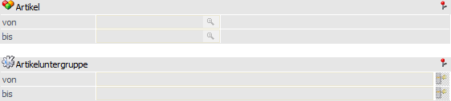
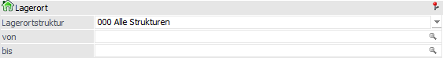

In dem Register "Lagerorte" können die Lagerortbestände bzw. der nicht verfügbare Lagerortbestand neu ermittelt werden.

Auswahl

Ø Lagerortbestände / nicht verfügbarer Lagerortbestand
An dieser Stelle kann definiert werden, welche Bestände neu ermittelt werden sollen.
ü Lagerortbestände
Es werden die
Lagerortbestände und Werte pro Artikel / Lagerort neu ermittelt und in die
Lagerortsummentabelle übertragen. Die Basis bildet hierbei das
Lagerortjournal.
ü nicht verfügbarer
Lagerortbestand
Die Artikelstamm-Information "nicht verfügbarer Bestand" wird
auf Grundlage der nicht verfügbaren Lagerorte (WinLine LAGERMANAGEMENT) neu
gebildet.
Lagerortfunktionen

Wenn die Lagerortbestände neu ermittelt werden sollen, so können über den Bereich "Lagerortfunktionen" nach Lagerortfunktionen und Eigenschaften der Lagerorte selektiert werden.
Achtung
Wurde die Option "Zwischenartikel immer mit der Summe ihrer Ausprägungen aktualisieren" in den FAKT-Parametern aktiviert, so stehen die Selektionen nicht zur Verfügung.
Hinweis
Innerhalb der ausgewählten Funktionen bzw. Eigenschaften erfolgt eine ODER-Verknüpfung. Die beiden Elemente "Funktion" und "Eigenschaft" werden hingegen mit einer UND-Verbindung verknüpft.
Beispiele
ü Bei der Funktion wird "Warenausgangslager" und "Wareneingangslager" ausgewählt und die Eigenschaft bleibt leer. Somit werden die Bestände aller Lagerorte neu ermittelt, die entweder Warenausgangslager oder Wareneingangslager oder beides hinterlegt haben.
ü Die Funktion bleibt leer und bei den Eigenschaften wird z.B. "Kühllager" und "Trockenlager" per Checkbox ausgewählt. Somit werden die Bestände aller Lagerorte neu ermittelt, die entweder Kühllager oder Trockenlager oder beides hinterlegt haben.
ü Bei der Funktion wird "Warenausgangslager" und bei den Eigenschaften wird "Kühllager" und "Trockenlager" ausgewählt. Somit werden die Bestände aller Lagerorte neu ermittelt, die entweder Warenausgangslager UND Kühllager oder Warenausgangslager UND Trockenlager hinterlegt haben.
Ø Funktion
Hier ist die Auswahl einer oder mehrerer Lagerortfunktionen per Auswahlbox möglich. Bei Auswahl mehrerer Funktionen werden diese mit der ODER-Verknüpfung angewendet.
Ø Eigenschaft
Hier ist die Auswahl einer oder mehrerer Eigenschaften per Auswahlbox möglich. Bei Auswahl mehrerer Eigenschaften werden diese mit der ODER-Verknüpfung angewendet.
Weitere Selektion

Diese Selektionsfelder stehen nur zur Verfügung, wenn der nicht verfügbare Lagerortbestand neu ermittelt werden soll.
Ø Artikel von / bis
An dieser Stelle kann nach den Artikeln eingeschränkt werden, bei denen der nicht verfügbare Bestand neu ermittelt werden soll. Bleiben die Felder leer, so werden alle Artikel berücksichtigt.
Ø Artikeluntergruppe von / bis
An dieser Stelle kann nach den Artikeluntergruppen eingeschränkt werden. Bleiben die Felder leer, so werden alle Artikel aller Artikeluntergruppen bei der Neuermittlung einbezogen.
Lagerort

Wenn die Lagerortbestände neu ermittelt werden sollen, so können in diesem Bereich die neu zu ermittelnden Lagerorte selektiert werden.
Achtung
Wurde die Option "Zwischenartikel immer mit der Summe ihrer Ausprägungen aktualisieren" in den FAKT-Parametern aktiviert, so stehen die Selektionen nicht zur Verfügung.
Ø Lagerortstruktur
In dem Feld "Lagerortstruktur" kann mit Hilfe einer Auswahlliste die auszuwertende Struktur gewählt werden. Durch Auswahl einer Struktur steht der auszuwertende Lagerortbereich fest und die nachfolgenden Felder ("Lagerort von / bis") stehen für eine Eingabe nicht zur Verfügung.
Ø Lagerort von / bis
An dieser Stelle können der auszuwertende Lagerort bzw. der Lagerortbereich über eine "von / bis"-Selektion angegeben werden.
Hinweis
Wird in dem Feld "von Lagerort" ein Ort angegeben, welcher nicht der letzten Hierarchie-Ebene entspricht, so wird in das Feld "bis Lagerort" automatisch der letzte Lagerort der darunterliegenden Hierarchie-Ebenen eingetragen.